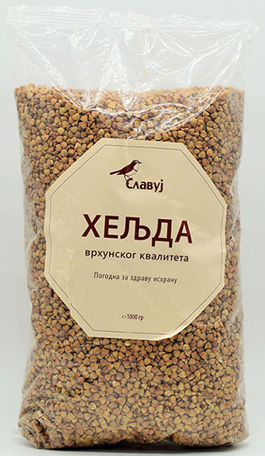

Heljdino Brašno
Cena: 259 din./1kg
kom/kg

Kruh od heljde, peciva od heljde, palačinke, palenta, pite, samo su neke od obroka koji se mogu raditi od heljdinog brašna. No zašto bi za sva ta jela koristili heljdino brašno pored ostalih?
Previše je razloga...
Heljdino brašno je jako važno za naše zdravlje! Iako je bogati ugljikohidratima, brašno od heljde lako je probavljivo, ne podiže nivo glukoze u krvi pa je pogodna, kako za osobe s poremećenom probavom, tako i za dijabetičare. Također, tko je alergičan na gluten, slobodno može koristiti heljdino brašno!
Heljda je bogata dijetalnim vlaknima, sadrži osam esencijalnih aminokiselina, bogata je flavonoidima, posebice rutinom. Otkriveno je da heljda smanjuje visoki tlak i kolesterol, održava zdravlje kardiovaskularnog sistema i smanjuje rizik od raka.
Brašno od heljde također je i nutritivno vrlo jako. Heljda pa tako i njeno brašno sadrži obilje vlakana, minerala, vitamina i proteina. U 100 grama heljdinog brašna sadržano je 2,5 grama masti, 11,7 grama proteina, 70,7 ugljikohidrata te samo 351 kaloriju.
Heljdino brašno jednostavno je za koristiti što je za današnju užurbanu svakodnevnicu svakako plus. Često se koristi i kao dodatak drugim vrstama brašna. Peciva i palačinke od takve mješavine imaju nježnu strukturu i ukus maslaca, a i nutritivno su "pojačani".
Koliko je lako raditi s ovim zdravim brašnom možete provjeriti u izradi ova dva ukusna jela: